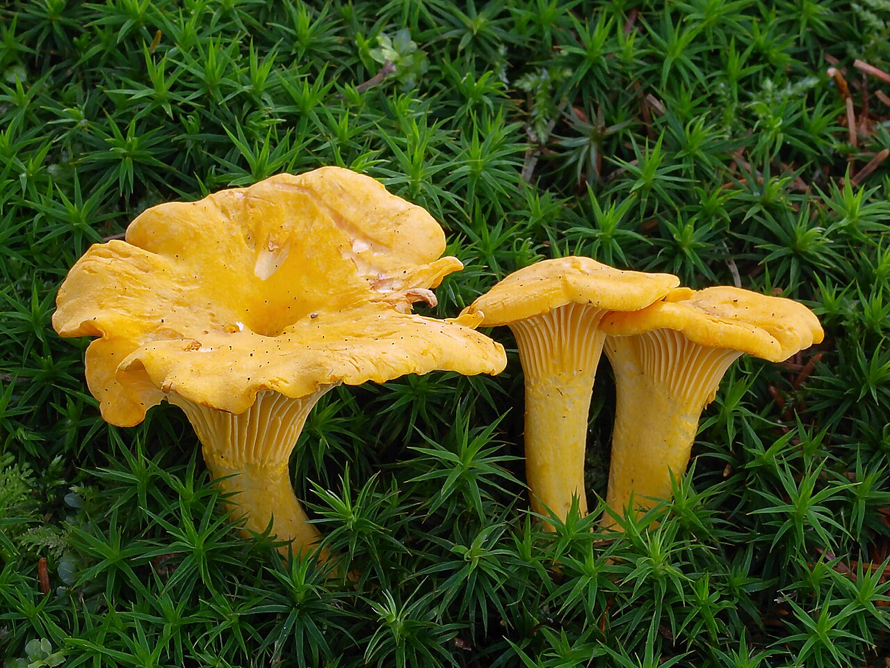
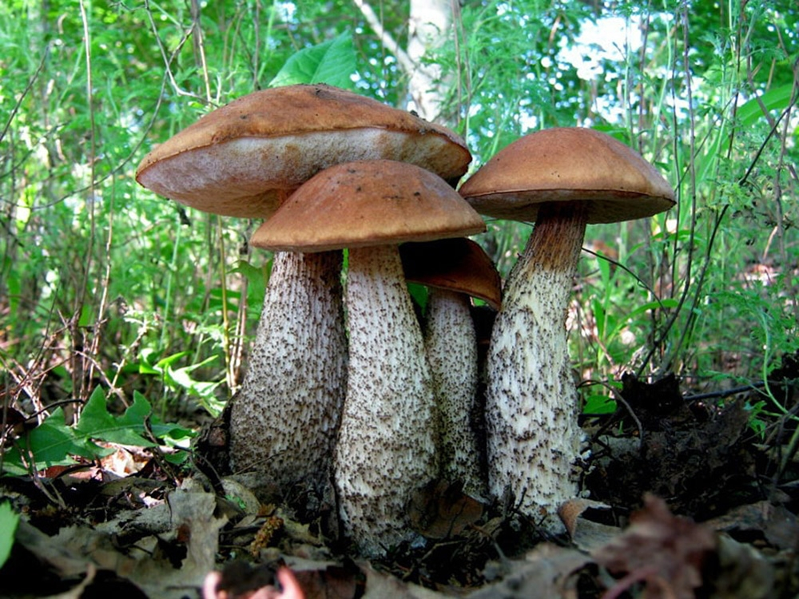
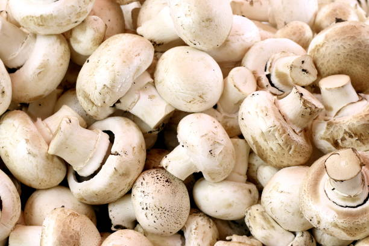
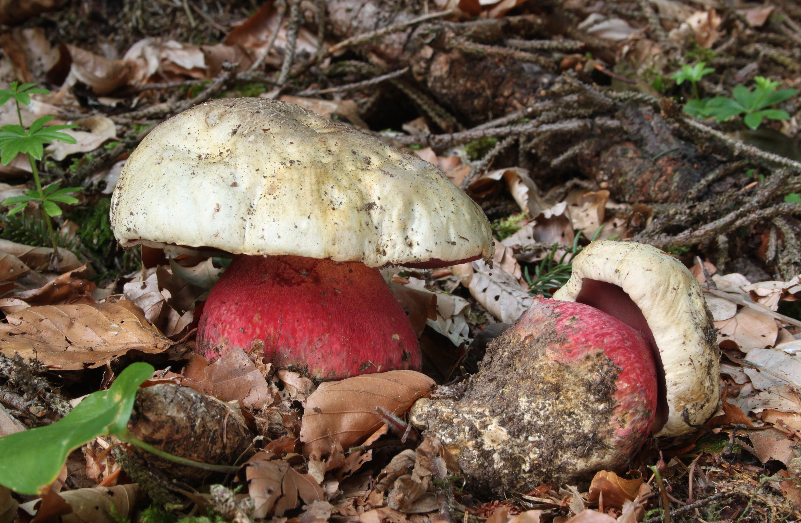

Що таке гриби:
Гриби — це окреме царство живої природи, яке поєднує ознаки як рослин, так і тварин. Вони не здатні до фотосинтезу, живляться готовими органічними речовинами, ростуть протягом усього життя та розмножуються спорами.
🌲 1. Їстівні гриби

Білий гриб
Цар лісу. Має масивну коричневу шляпку та товсту ніжку. Головна фішка — його м'якоть завжди залишається ідеально білою при будь-якій обробці: сушці, варінні чи зрізі.
Читати більше
Лисичка звичайна
Яскраво-жовтий гриб із хвилястими краями. Вони майже ніколи не бувають червивими завдяки речовині хіноманнозі, яка природно знищує личинки будь-яких комах.
Читати більше
Підберезник
Має довгу тонку ніжку в темних лусочках і м'яку коричневу шляпку. Росте виключно біля беріз, утворюючи з їхнім корінням симбіоз. М'якоть на зрізі швидко темніє.
Читати більше
Печериця лісова
Має округлу світлу шляпку з дрібними лусочками. Пластинки під шляпкою у молодих грибів рожеві, а у старих — темно-коричневі. Часто зустрічається в хвойних лісах.
Читати більше⚠️ 2. Отруйні гриби

Бліда поганка
Найбільш смертоносний гриб на планеті. Містить сильні токсини (аманітини), які повністю руйнують печінку та нирки. Перші симптоми з'являються лише через 6-24 години.
Читати більше
Мухомор пантерний
Набагато небезпечніший і отруйніший за звичайний червоний мухомор. Шляпка коричнева або бура з дрібними білими цятками. Викликає важке токсичне отруєння.
Читати більше
Несправжній опеньок
Дуже схожий на їстівні опеньки. Відрізнити можна за кольором пластинок: у несправжніх вони сірчано-жовті або зеленуваті, а також на ніжці немає "спіднички".
Читати більше
Сатанинський гриб
Головний двійник білого гриба. Шляпка блідо-сіра, але ніжка має яскраво-червону сіточку. Якщо розрізати м'якоть, вона буквально за пару секунд стає синьою.
Читати більше